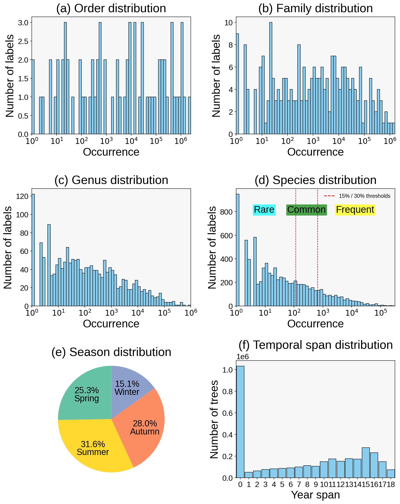
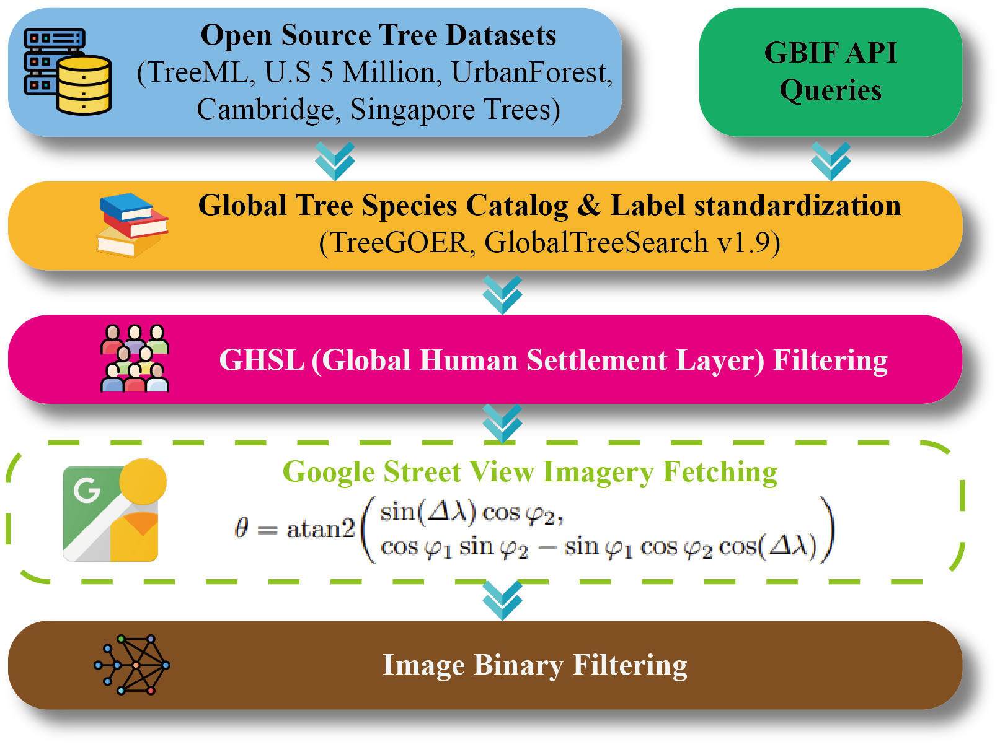
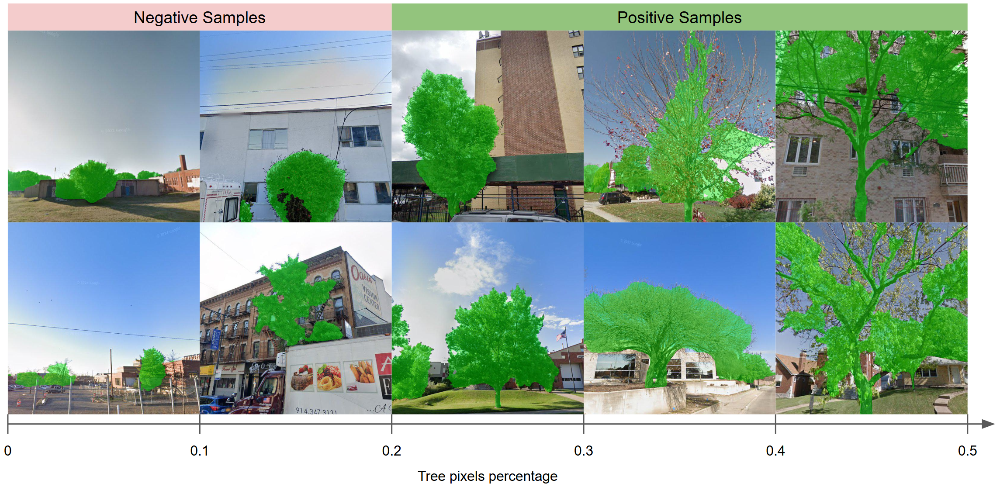
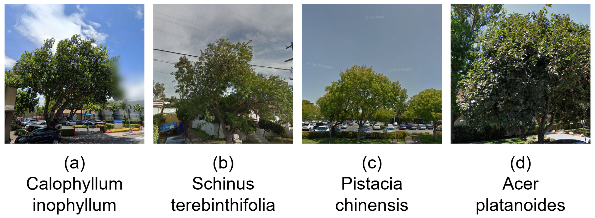
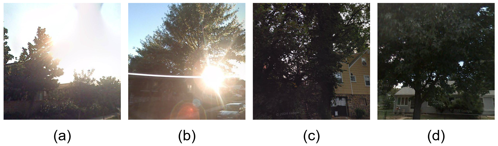
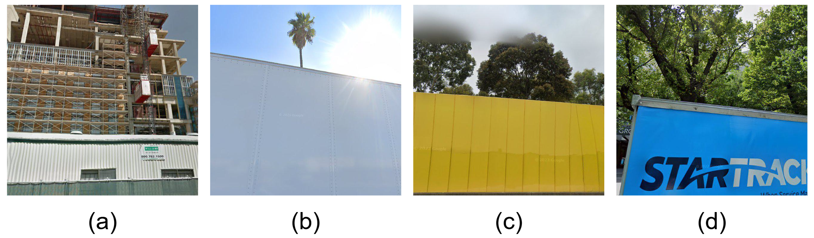
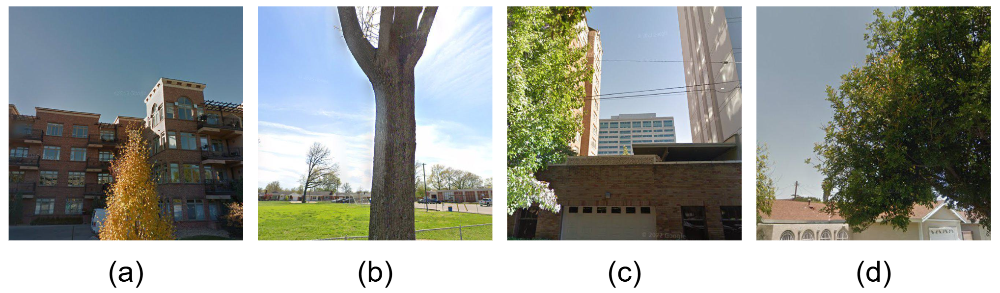

Global Coverage
12,235,152 street-view images from 133 countries across five continents.
12,235,152 street-view images from 133 countries across five continents.
Four-level labels: 71 orders, 241 families, 1,747 genera, and 8,363 species.
3,365,485 individual trees linked with geolocation and temporal records.
Season labels capture phenological changes and intra-class appearance variation.
Long-term observations from 2015 to 2025 support longitudinal analysis.
The fine-grained classification of street trees is a crucial task for urban planning, streetscape management, and the assessment of urban ecosystem services. However, progress in this field has been significantly hindered by the lack of large-scale, geographically diverse, and publicly available benchmark datasets specifically designed for street trees. To address this critical gap, we introduce StreetTree, the world's first large-scale benchmark dataset dedicated to fine-grained street tree classification. The dataset contains over 12 million images covering more than 8,300 common street tree species, collected from urban streetscapes across 133 countries spanning five continents, and supplemented with expert-verified observational data. StreetTree poses substantial challenges for pretrained vision models under complex urban environments: high inter-species visual similarity, long-tailed natural distributions, significant intra-class variations caused by seasonal changes, and diverse imaging conditions such as lighting, occlusions from buildings, and varying camera angles. In addition, we provide a hierarchical taxonomy (order-family-genus-species) to support research in hierarchical classification and representation learning. Through extensive experiments with various visual models, we establish strong baselines and reveal the limitations of existing methods in handling such real-world complexities.

The dataset follows a naturally long-tailed distribution at order, family, genus, and species levels, while maintaining meaningful seasonal coverage and long-term observation depth.
We organize data processing into construction and quality filtering stages. The pipeline view and binary filtering examples are shown below.

StreetTree data construction and preprocessing workflow.

Two-stage binary filtering for noisy sample removal.
StreetTree highlights major real-world challenges for fine-grained classification, including high inter-species similarity, seasonal shifts, occlusion, illumination changes, and viewpoint variation.

High inter-species visual similarity.

Strong seasonal intra-class appearance variation.

Robustness under diverse illumination conditions.

Frequent occlusion in complex urban scenes.

Sensitivity to viewpoint and capture-angle changes.
| Model | Frequent | Common | Rare | |||||||||
|---|---|---|---|---|---|---|---|---|---|---|---|---|
| Order | Family | Genus | Species | Order | Family | Genus | Species | Order | Family | Genus | Species | |
| 0.1% of training set | ||||||||||||
| Fine-tuned ViT | 17.52 (52.31) | 13.26 (34.56) | 6.33 (20.16) | 1.81 (5.76) | 12.34 (38.11) | 9.47 (24.22) | 4.16 (12.35) | 1.43 (3.28) | 7.82 (25.33) | 5.14 (15.29) | 2.13 (7.41) | 1.16 (1.82) |
| CLIP | 20.35 (60.62) | 16.58 (41.25) | 5.21 (21.28) | 1.54 (5.56) | 14.28 (45.18) | 11.31 (30.12) | 3.14 (14.22) | 1.27 (3.18) | 9.17 (30.16) | 7.18 (18.11) | 1.56 (8.12) | 1.08 (1.52) |
| Fine-tuned CLIP | 20.06 (58.76) | 15.16 (39.84) | 6.08 (22.95) | 1.76 (5.82) | 13.82 (43.21) | 10.43 (28.17) | 4.07 (15.11) | 1.41 (3.59) | 8.87 (28.19) | 6.42 (16.21) | 2.18 (9.14) | 1.19 (1.97) |
| Fine-tuned SigLIP | 23.41 (63.26) | 18.28 (44.31) | 8.42 (25.18) | 1.52 (7.82) | 16.56 (48.11) | 12.87 (33.22) | 5.86 (18.81) | 1.93 (5.16) | 11.18 (33.65) | 8.41 (20.17) | 3.27 (11.18) | 1.46 (2.81) |
| Fine-tuned BioCLIP | 26.17 (66.42) | 21.18 (48.21) | 11.23 (28.14) | 2.87 (9.11) | 19.12 (52.19) | 15.18 (37.51) | 7.82 (21.18) | 1.81 (6.87) | 13.48 (37.11) | 10.56 (24.12) | 4.83 (14.16) | 1.87 (3.92) |
| 1% of training set | ||||||||||||
| Fine-tuned ViT | 21.85 (58.41) | 17.31 (42.49) | 10.45 (27.42) | 3.32 (12.05) | 15.48 (42.17) | 11.82 (29.51) | 6.81 (18.13) | 1.87 (7.82) | 10.72 (28.18) | 7.46 (18.68) | 4.13 (11.19) | 1.81 (4.13) |
| CLIP | 20.18 (60.45) | 16.52 (41.81) | 6.98 (24.42) | 1.78 (8.71) | 14.07 (44.18) | 11.17 (29.35) | 4.19 (16.43) | 0.93 (5.11) | 9.16 (29.78) | 6.82 (18.16) | 2.84 (9.81) | 1.38 (2.87) |
| Fine-tuned CLIP | 22.21 (61.22) | 16.65 (43.02) | 8.92 (26.18) | 3.98 (11.65) | 16.18 (45.11) | 11.52 (30.18) | 5.82 (17.81) | 1.72 (7.58) | 10.82 (30.34) | 7.18 (19.12) | 3.19 (10.82) | 1.86 (3.81) |
| Fine-tuned SigLIP | 25.28 (64.18) | 20.22 (47.48) | 12.31 (30.49) | 5.08 (14.83) | 18.33 (48.68) | 14.07 (34.47) | 8.16 (21.84) | 2.82 (9.98) | 12.16 (33.67) | 9.19 (22.53) | 5.33 (13.07) | 1.48 (5.92) |
| Fine-tuned BioCLIP | 28.17 (67.14) | 23.94 (51.26) | 15.81 (34.01) | 7.40 (17.63) | 21.04 (52.35) | 16.32 (38.44) | 10.66 (25.55) | 4.56 (12.81) | 15.67 (37.93) | 11.64 (26.30) | 6.58 (16.22) | 2.50 (7.02) |
| 10% of training set | ||||||||||||
| Fine-tuned ViT | 30.71 (69.45) | 24.82 (53.05) | 17.25 (38.28) | 10.85 (24.95) | 22.41 (52.18) | 17.08 (38.37) | 11.39 (26.33) | 6.41 (16.23) | 15.16 (36.24) | 11.05 (25.36) | 6.82 (16.30) | 3.18 (9.76) |
| CLIP | 22.01 (62.31) | 17.52 (44.38) | 8.68 (27.14) | 4.32 (13.98) | 15.18 (45.12) | 12.07 (31.18) | 5.14 (18.27) | 2.76 (8.54) | 10.93 (30.25) | 7.82 (20.40) | 2.86 (11.01) | 1.82 (4.31) |
| Fine-tuned CLIP | 27.88 (67.22) | 22.05 (50.25) | 14.72 (35.81) | 10.35 (23.75) | 19.34 (49.30) | 15.38 (36.18) | 9.12 (24.16) | 5.46 (15.80) | 12.86 (34.35) | 9.82 (23.87) | 5.05 (14.77) | 2.82 (8.44) |
| Fine-tuned SigLIP | 34.76 (72.36) | 28.16 (56.80) | 20.52 (42.00) | 13.99 (28.32) | 25.76 (55.43) | 20.67 (41.06) | 14.91 (30.47) | 8.01 (19.24) | 18.35 (40.14) | 14.16 (28.64) | 9.02 (19.82) | 4.67 (11.49) |
| Fine-tuned BioCLIP | 38.16 (76.96) | 32.31 (60.24) | 24.85 (47.70) | 16.13 (32.86) | 29.23 (59.27) | 24.02 (45.37) | 17.14 (34.82) | 11.31 (23.38) | 21.32 (44.06) | 17.62 (32.82) | 11.31 (23.50) | 6.19 (14.57) |
| 100% of training set | ||||||||||||
| Fine-tuned ViT | 41.25 (75.46) | 33.15 (60.25) | 25.60 (45.84) | 17.16 (31.77) | 28.09 (58.24) | 22.51 (44.87) | 16.64 (31.23) | 9.32 (21.62) | 20.85 (42.88) | 15.16 (31.10) | 10.59 (21.22) | 5.14 (13.79) |
| CLIP | 24.99 (66.21) | 20.11 (48.13) | 11.88 (31.56) | 8.67 (17.16) | 18.25 (49.12) | 14.24 (34.81) | 7.43 (21.66) | 3.48 (11.58) | 12.40 (33.02) | 9.43 (23.15) | 4.07 (14.62) | 1.28 (6.13) |
| Fine-tuned CLIP | 42.31 (78.77) | 35.16 (64.83) | 28.25 (50.34) | 23.77 (36.02) | 31.03 (61.81) | 25.27 (48.05) | 18.30 (35.16) | 11.55 (24.79) | 23.35 (45.50) | 18.94 (35.54) | 12.25 (24.12) | 6.16 (15.27) |
| Fine-tuned SigLIP | 42.92 (78.06) | 36.86 (66.43) | 31.41 (57.05) | 28.42 (48.47) | 39.19 (73.52) | 31.34 (60.94) | 25.73 (50.33) | 23.17 (41.85) | 37.51 (71.59) | 23.30 (59.76) | 23.43 (46.63) | 18.29 (38.37) |
| Fine-tuned BioCLIP | 46.41 (81.12) | 40.30 (69.00) | 37.70 (63.28) | 30.26 (52.07) | 41.67 (78.09) | 38.69 (68.81) | 30.96 (52.63) | 27.15 (46.01) | 40.42 (77.20) | 31.64 (64.12) | 28.27 (48.95) | 20.60 (41.76) |
| Model | Top-1 | Top-5 | ||||||
|---|---|---|---|---|---|---|---|---|
| Order | Family | Genus | Species | Order | Family | Genus | Species | |
| 0.1% of training set | ||||||||
| Fine-tuned ViT | 16.37 ± 0.58 | 12.39 ± 0.30 | 5.84 ± 0.88 | 1.73 ± 0.22 | 49.15 ± 1.24 | 32.27 ± 0.22 | 18.49 ± 0.64 | 5.23 ± 0.55 |
| CLIP | 19.01 ± 0.28 | 15.43 ± 1.12 | 4.76 ± 1.28 | 1.48 ± 0.56 | 57.15 ± 0.70 | 38.71 ± 1.03 | 19.72 ± 1.46 | 5.05 ± 0.89 |
| Fine-tuned CLIP | 18.69 ± 0.44 | 14.12 ± 1.37 | 5.63 ± 0.19 | 1.69 ± 0.42 | 55.27 ± 0.66 | 37.20 ± 2.34 | 21.24 ± 0.87 | 5.34 ± 0.54 |
| Fine-tuned SigLIP | 21.91 ± 1.55 | 17.09 ± 0.18 | 7.84 ± 1.42 | 1.58 ± 0.67 | 59.86 ± 0.58 | 41.74 ± 1.46 | 23.70 ± 1.12 | 7.23 ± 0.69 |
| Fine-tuned BioCLIP | 24.62 ± 0.79 | 19.87 ± 0.94 | 10.47 ± 0.38 | 2.67 ± 0.91 | 63.18 ± 0.85 | 45.71 ± 1.06 | 26.57 ± 1.32 | 8.58 ± 0.44 |
| 1% of training set | ||||||||
| Fine-tuned ViT | 20.46 ± 0.54 | 16.11 ± 0.46 | 9.66 ± 0.67 | 3.04 ± 0.27 | 54.82 ± 0.92 | 39.63 ± 0.74 | 25.40 ± 0.42 | 11.11 ± 0.65 |
| CLIP | 18.84 ± 0.33 | 15.34 ± 1.02 | 6.40 ± 0.63 | 1.63 ± 0.82 | 56.84 ± 0.64 | 39.04 ± 1.35 | 22.66 ± 1.82 | 7.94 ± 0.72 |
| Fine-tuned CLIP | 20.87 ± 0.66 | 15.52 ± 0.70 | 8.24 ± 0.85 | 3.55 ± 0.36 | 57.63 ± 0.62 | 40.18 ± 0.48 | 24.33 ± 0.34 | 10.74 ± 1.32 |
| Fine-tuned SigLIP | 23.74 ± 0.61 | 18.87 ± 0.78 | 11.42 ± 0.49 | 4.60 ± 0.85 | 60.70 ± 1.03 | 44.58 ± 2.31 | 28.53 ± 1.04 | 13.76 ± 0.79 |
| Fine-tuned BioCLIP | 26.62 ± 1.22 | 22.31 ± 1.32 | 14.68 ± 0.44 | 6.78 ± 0.96 | 63.81 ± 0.76 | 48.39 ± 0.68 | 32.07 ± 1.18 | 16.51 ± 0.58 |
| 10% of training set | ||||||||
| Fine-tuned ViT | 28.87 ± 0.42 | 23.13 ± 1.57 | 15.97 ± 0.68 | 9.89 ± 0.32 | 65.59 ± 0.80 | 49.79 ± 0.56 | 35.64 ± 1.52 | 23.05 ± 0.85 |
| CLIP | 20.55 ± 0.44 | 16.33 ± 1.14 | 7.92 ± 0.76 | 3.99 ± 0.62 | 58.50 ± 0.32 | 41.48 ± 1.33 | 25.19 ± 0.38 | 12.79 ± 0.36 |
| Fine-tuned CLIP | 26.02 ± 0.55 | 20.58 ± 0.49 | 13.50 ± 0.84 | 9.32 ± 0.31 | 63.27 ± 2.33 | 47.13 ± 0.91 | 33.25 ± 1.55 | 21.97 ± 0.68 |
| Fine-tuned SigLIP | 32.78 ± 0.76 | 26.50 ± 1.63 | 19.24 ± 1.20 | 12.72 ± 0.85 | 68.59 ± 0.79 | 53.35 ± 1.43 | 39.42 ± 0.76 | 26.31 ± 1.31 |
| Fine-tuned BioCLIP | 36.18 ± 1.34 | 30.50 ± 1.06 | 23.17 ± 0.84 | 15.03 ± 0.61 | 73.05 ± 1.42 | 56.96 ± 0.76 | 44.84 ± 0.39 | 30.74 ± 0.57 |
| 100% of training set | ||||||||
| Fine-tuned ViT | 38.47 | 30.85 | 23.67 | 15.51 | 71.63 | 56.83 | 42.69 | 29.55 |
| CLIP | 23.50 | 18.82 | 10.91 | 7.59 | 62.38 | 45.18 | 29.42 | 15.90 |
| Fine-tuned CLIP | 39.88 | 33.04 | 26.13 | 21.23 | 74.96 | 61.18 | 47.05 | 33.54 |
| Fine-tuned SigLIP | 42.14 | 35.53 | 30.24 | 27.25 | 77.12 | 65.33 | 55.63 | 47.08 |
| Fine-tuned BioCLIP | 45.45 | 39.76 | 36.31 | 29.45 | 80.50 | 68.81 | 61.10 | 50.76 |
@article{li2026streettree,
title={StreetTree: A Large-Scale Global Benchmark for Fine-Grained Tree Species Classification},
author={Li, Jiapeng and Huang, Yingjing and Zhang, Fan and Liu, Yu},
journal={arXiv preprint arXiv:2602.19123},
year={2026},
url={https://arxiv.org/abs/2602.19123}
}